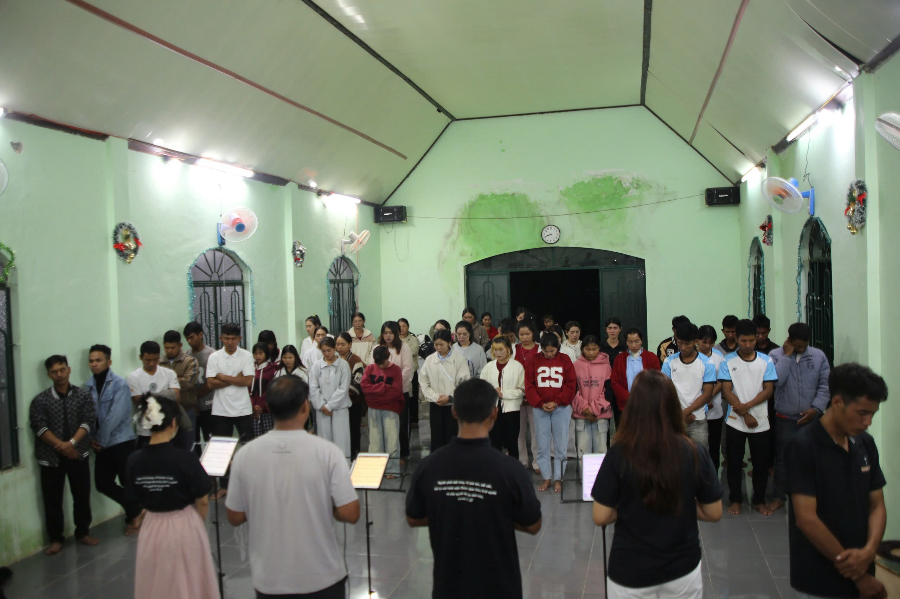
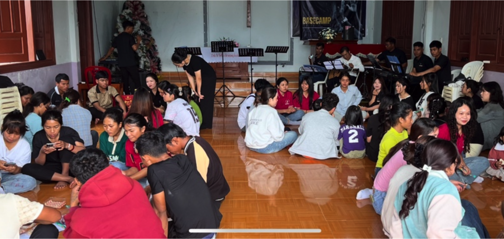

그리스도 안에서 하나 됨
여러 교회의 청소년들이 서로 만나고 교제하며 믿음의 친구를 얻도록 돕습니다.

기도와 후원으로 함께하는 다음 세대 사역
여러 교회의 청소년들이 그리스도 안에서 만나고, 예배하며, 복음 안에서 다시 서도록 함께해 주세요.
낯선 환경 속에서 신앙을 붙들고 살아가는 청소년들에게 수련회는 단순한 행사가 아닙니다. 함께 웃고, 말씀을 듣고, 예배 안에서 기도하는 시간은 “나 혼자가 아니구나”라는 깊은 격려가 됩니다.
이번 수련회는 여러 교회의 청소년들이 그리스도 안에서 하나 되어 서로를 만나고, 복음의 능력을 다시 발견하며, 예수님과의 관계 안에서 자라가도록 돕는 자리입니다.



수련회의 목적
여러 교회의 청소년들이 서로 만나고 교제하며 믿음의 친구를 얻도록 돕습니다.
예배와 성경공부를 통해 복음이 지금도 삶을 변화시키는 능력임을 듣게 합니다.
기도와 말씀 안에서 예수 그리스도를 인격적으로 알아가고 영적으로 자라도록 격려합니다.
하나님을 섬길 다음 세대 사역자와 리더들이 일어나도록 격려합니다.
함께할 프로그램
후원 안내
이 재정은 청소년들의 교통비, 식비, 숙박비, 교재 및 수련회 운영에 필요한 비용으로 사용됩니다. 크고 작은 모든 후원은 이번 수련회를 가능하게 할 뿐 아니라, 청소년들의 삶에 오래 남을 복음의 씨앗이 됩니다.
한화 약 510,000원 · 2026년 7월 16일 기준 (1 VND ≈ 0.0567원)
교통비 · 식비 · 숙박비 · 교재 · 운영비
한 청소년의 식사와 이동을 돕는 후원이 될 수 있습니다.
수련회 참여에 필요한 하루 비용 일부를 채우는 후원이 될 수 있습니다.
여러 청소년이 함께 말씀을 듣는 자리를 세우는 후원이 될 수 있습니다.
후원 계좌
기도로도 함께해 주세요
청소년들이 예수 그리스도를 인격적으로 만나도록
여러 교회가 사랑 안에서 하나 되도록
필요한 재정과 섬김의 손길이 채워지도록